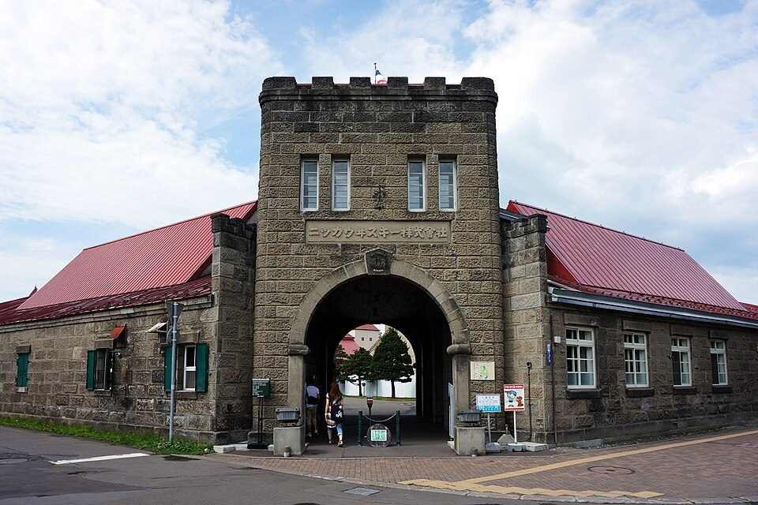

工場見学（北海道・中部・広島・九州・沖縄）：試飲つきの蒸溜所、お菓子の工場、車の組立ライン（2026年版）
要点まとめ

関東・関西の工場見学は別の記事に
東京・神奈川などの関東と、兵庫・大阪などの関西の工場見学・社会科見学は、2026年11月に調べ直して、地域ごとの記事にまとめました。この記事は、それ以外の地域（北海道・中部・広島・九州・沖縄）の施設を載せています。
料金は大人1人分で、消費税を含む総額です（店などが消費者に示す価格は税込の総額で表示する決まりがあります）。[7]
見学を楽しむコツ
- 予約
予約の受付期間を先に調べる
- 休み
ツアーのない日・休みの日を確かめる
- 撮影
工場の中は撮影禁止のことが多い
例: マツダは組立工場の中と敷地の風景が撮影禁止[2]
ビール・ウイスキー（試飲つき）
お酒の工場見学は、製造の説明のあとに、できたてを試飲できるのが楽しみです。試飲つきの見学の料金を比べると、次のとおりです。
かっこ内は試飲の量。20歳未満の料金は施設ごとに違う
サッポロビール博物館（札幌市）
ガイドツアーで黒ラベルと復刻札幌製麦酒を1杯ずつ[9]
- 料金
- ガイドツアー2,000円。予約なしの自由見学は1,000円[9]
- 時間
- ガイドツアー約55分（試飲を含む）[9]
- 予約
- ガイドツアーは必要。月曜は実施しない[9]
- 場所
- JR 苗穂駅北口から徒歩約8分[11]
オリオンハッピーパーク（沖縄県名護市）
沖縄のオリオンビール工場。試飲は2杯まで[4]
- 料金
- 1,000円（小学生〜19歳350円、未就学児無料）[3]
- 時間
- 1時間[3]
- 予約
- 必要（2名以上）[4][3]
- 休み
- 月曜、年末年始[4]
ニッカウヰスキー 余市蒸溜所（北海道余市町）
無料のガイドツアーで、3種類を1杯ずつ試飲できる[1]
- 料金
- 無料[1]
- 予約
- 必要。4週間先まで受付（1〜9名）[1]
- 休み
- 12月23日〜1月7日、6月11日[1]
キリン 富士御殿場蒸溜所（静岡県御殿場市）
500円の通常ツアーと、5,000円のプレミアムツアーがある[10]
- 料金
- 通常ツアー500円（20歳以上）[10]
- 時間
- 約80分（試飲を含む）[10]
- 休み
- 月曜（祝日なら営業し、次の平日が休館）、年末年始[10]
- 場所
- JR 御殿場駅から無料シャトルバス[12]
お菓子・食品の工場
白い恋人パーク（札幌市）
白い恋人が作られる工場を見られる。2026年にリニューアル[13]
- 料金
- おとな1,200円、こども600円（有料エリア）[14]
- 時間
- 10:00〜17:30（最終受付16:30）[14]
MIZKAN MUSEUM（愛知県半田市）
江戸時代の酢づくりと、いまの醸造の様子をガイドつきで見る[15]
- 料金
- 大人500円（中高生300円、小学生200円）[15]
- 時間
- 120分（ガイド約50分）[15]
- 休み
- 木曜、年末年始、お盆[15]
- 場所
- JR 半田駅から徒歩3分[16]
車・鉄道・ものづくり
マツダミュージアム（広島県府中町）
歴史展示に加え、実際の組立工場を目の前で見られる[2]
- 料金
- 無料[2]
- 予約
- 必要。3か月前の同日9時から2日前まで[8]
- 場所
- JR 向洋駅南口から徒歩5分（本社ロビーに集合）[17]
トヨタの3施設（名古屋・長久手・豊田）
機械の実演、クルマの歴史、トヨタ車の展示と見どころが違う
リニア・鉄道館（名古屋市）
新幹線の運転シミュレータがある[23]
- 料金
- 大人1,200円[23]
- 休み
- 火曜（祝日なら翌日）[23][24]
- 場所
- あおなみ線 金城ふ頭駅から徒歩約2分[23][24]
そのほかのものづくりミュージアム
タイル・トイレ・乗り物など、体験型の展示が多い
地域別の一覧
| 地域 | 施設 | 料金 |
|---|---|---|
| 北海道 | サッポロビール博物館 | 2,000円（ツアー） |
| 白い恋人パーク | 1,200円 | |
| ニッカ 余市蒸溜所 | 無料 | |
| 中部 | キリン 富士御殿場蒸溜所 | 500円 |
| トヨタ産業技術記念館 | 1,000円 | |
| トヨタ博物館 | 1,200円 | |
| トヨタ会館 | 無料 | |
| リニア・鉄道館 | 1,200円 | |
| MIZKAN MUSEUM | 500円 | |
| INAXライブミュージアム | 1,000円 | |
| 中国 | マツダミュージアム | 無料 |
| 九州・沖縄 | TOTOミュージアム | 無料 |
| オリオンハッピーパーク | 1,000円 |
出典（27件）
閲覧日はいずれも2026年11月2日
- 余市蒸溜所 よくあるご質問（ニッカウヰスキー）
- マツダミュージアム よくあるご質問（マツダ）
- オリオンハッピーパーク 工場見学予約（オリオンビール）
- 工場見学と施設のご案内（オリオンハッピーパーク）（オリオンビール）
- トヨタ会館 施設情報（トヨタ自動車）
- トヨタ会館 展示内容（トヨタ自動車）
- No.6902「総額表示」の義務付け（国税庁）
- マツダミュージアム 予約について（マツダ）
- サッポロビール博物館 利用案内（サッポロビール）
- キリンディスティラリー 富士御殿場蒸溜所（キリンビール）
- サッポロビール博物館 アクセス（サッポロビール）
- 富士御殿場蒸溜所 アクセス（キリンビール）
- 白い恋人工場リニューアルオープン（石屋製菓）
- 白い恋人パーク 料金（石屋製菓）
- MIZKAN MUSEUM ご利用案内（ミツカン）
- MIZKAN MUSEUM アクセス（ミツカン）
- マツダミュージアム アクセス（マツダ）
- マツダミュージアム イベント情報（マツダ）（閲覧日 2026年11月5日）
- 入館料・開館時間（トヨタ産業技術記念館）
- アクセス（トヨタ産業技術記念館）
- 入館料・開館時間（トヨタ博物館）
- アクセス（トヨタ博物館）
- リニア・鉄道館 施設案内（JR東海）
- リニア・鉄道館 アクセス（JR東海）
- INAXライブミュージアム ご利用案内（LIXIL）
- INAXライブミュージアム（LIXIL）
- TOTOミュージアム（TOTO）
写真・画像の出典（1件）
- ニッカウヰスキー 余市蒸溜所の正門（北海道余市町）
写真: 663highland／Wikimedia Commons（CC BY 2.5）